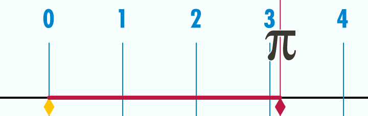

Let's make a circle that follows our mouse cursor.
Start with creating a circle.
function love.load()
--Create an object called circle
circle = {}
--Give it the properties x, y, radius and speed
circle.x = 100
circle.y = 100
circle.radius = 25
circle.speed = 200
end
function love.draw()
--Draw the circle
love.graphics.circle("line", circle.x, circle.y, circle.radius)
endTo move the circle to the cursor, we need to know the angle. We can get the angle with the function math.atan2. The first argument is the y-position you want to go to, minus your object's y-position. The second argument is the same but for the x-position. This is one of the rare occasions where y comes before x.
Basically what atan2 does is that it takes a vertical and horizontal vector (distance + direction), and with that information it returns an angle.

To get the velocity we need, we subtract our circle's position from our targets position.
function love.update(dt)
--love.mouse.getPosition returns the x and y position of the cursor.
mouse_x, mouse_y = love.mouse.getPosition()
angle = math.atan2(mouse_y - circle.y, mouse_x - circle.x)
end
function love.draw()
love.graphics.circle("line", circle.x, circle.y, circle.radius)
--Print the angle
love.graphics.print("angle: " .. angle, 10, 10)
--Here are some lines to visualize the velocities
love.graphics.line(circle.x, circle.y, mouse_x, circle.y)
love.graphics.line(circle.x, circle.y, circle.x, mouse_y)
--The angle
love.graphics.line(circle.x, circle.y, mouse_x, mouse_y)
endIf atan2 confuses you, don't worry. All you need to know is: math.atan2(target_y - object_y, target_x - object_x) gives you the angle. In our case the object is the circle and the target is our cursor.
It's about to get mathy in here, but don't let it frighten you. It's not that difficult, and if you don't understand that's completely fine at a beginner level.
When you run the game you might notice that the angle is not going higher than 3.14 (Pi, π). This is because atan2 doesn't return an angle in degrees, but instead it returns the angle in radians.
This is a gif explaining radians.
If you're still confused I recommend watching Khan Academy's video on radians.
Some keypoints:
The number π, sometimes written as Pi, is the ratio of a circle's circumference to its diameter. Meaning that if we were to take the diameter of a circle, and divide it by the circumference of the circle, we get Pi.

In Lua we can get π by using math.pi.
If you don't understand that's fine for now. Don't be discouraged if you don't get something the first time.
Now we need to make our circle move towards the mouse. For this we will use math.cos and math.sin.
Both functions will return a number between -1 and 1 based on the angle we pass.
Here's a gif that helps visualize sine and cosine.
And here's an image to show what exactly is going on in the gif.
Sine and cosine are a number between -1 and 1 based on the angle.
If the angle would point to the left then cosine would be -1 and sine would be 0.
If the angle would point down then cosine would be 0 and sine would be 1.
So how can we use these values to make our circle move towards the mouse? Well by multiplying our speed with them. For example, if the mouse is at a diagonal angle, let's say upper right, sine would be something like -0.7 and cosine would be 0.7.
Now if we were to do this:
circle.x = circle.x + circle.speed * dt
circle.y = circle.y + circle.speed * dtOur circle would move straight to the bottom-right. But multiplied with sine and cosine like this:
circle.x = circle.x + circle.speed * cos * dt
circle.y = circle.y + circle.speed * sin * dtThen our circle would move horizontally with circle.speed * 0.7
And would move vertically with circle.speed * -0.7.
Which means it should move straight towards our mouse. Try it out!
function love.update(dt)
--love.mouse.getPosition returns the x and y position of the cursor.
mouse_x, mouse_y = love.mouse.getPosition()
angle = math.atan2(mouse_y - circle.y, mouse_x - circle.x)
cos = math.cos(angle)
sin = math.sin(angle)
--Make the circle move towards the mouse
circle.x = circle.x + circle.speed * cos * dt
circle.y = circle.y + circle.speed * sin * dt
end
function love.draw()
love.graphics.circle("line", circle.x, circle.y, circle.radius)
--The angle
love.graphics.line(circle.x, circle.y, mouse_x, mouse_y)
love.graphics.line(circle.x, circle.y, mouse_x, circle.y)
love.graphics.line(circle.x, circle.y, circle.x, mouse_y)
endNow let's say we only want to move the circle when it's near our cursor. To do that we need to calculate the distance between them. For this we use the Pythagorean theorem.
With the Pythagorean theorem you can calculate the longest line in a triangle with a right angle.
Basically what you do is you use the length of the shorter sides to make 2 squares. Then you sum up those squares to make one big square. And finally you find the root of the square and you get the length of the longest line, also known as the hypotenuse.
When you have 2 points, in our case the circle and cursor, there is also an invisible triangle.
Check it out:
function love.draw()
love.graphics.circle("line", circle.x, circle.y, circle.radius)
love.graphics.line(circle.x, circle.y, mouse_x, mouse_y)
love.graphics.line(circle.x, circle.y, mouse_x, circle.y)
love.graphics.line(mouse_x, mouse_y, mouse_x, circle.y)
endIf we use the Pythagorean theorem on this triangle we can figure out its hypotenuse, and thus we know the distance between the 2 points.
Let's create a new function for this. First we need to the horizontal and vertical sides.
function getDistance(x1, y1, x2, y2)
local horizontal_distance = x1 - x2
local vertical_distance = y1 - y2
endNext we need to square these numbers. We can do this by multiplying it by itself or with ^2.
function getDistance(x1, y1, x2, y2)
local horizontal_distance = x1 - x2
local vertical_distance = y1 - y2
--Both of these work
local a = horizontal_distance * horizontal_distance
local b = vertical_distance ^2
endNow we need to sum these numbers and get the square root. If you do 5*5, or 5^2, you get 25. So the square root of 25 is 5. We can get the square root with math.sqrt.
function getDistance(x1, y1, x2, y2)
local horizontal_distance = x1 - x2
local vertical_distance = y1 - y2
--Both of these work
local a = horizontal_distance * horizontal_distance
local b = vertical_distance ^2
local c = a + b
local distance = math.sqrt(c)
return distance
endTo proof that it works let's draw a circle with a radius of the distance.
function love.draw()
love.graphics.circle("line", circle.x, circle.y, circle.radius)
love.graphics.line(circle.x, circle.y, mouse_x, mouse_y)
love.graphics.line(circle.x, circle.y, mouse_x, circle.y)
love.graphics.line(mouse_x, mouse_y, mouse_x, circle.y)
local distance = getDistance(circle.x, circle.y, mouse_x, mouse_y)
love.graphics.circle("line", circle.x, circle.y, distance)
endIt works! Now let's have some fun with it. I want the circle to only move when it's closer than 200 pixels, and the closer it gets the slower it moves.
function love.update(dt)
mouse_x, mouse_y = love.mouse.getPosition()
angle = math.atan2(mouse_y - circle.y, mouse_x - circle.x)
cos = math.cos(angle)
sin = math.sin(angle)
local distance = getDistance(circle.x, circle.y, mouse_x, mouse_y)
if distance < 400 then
circle.x = circle.x + circle.speed * cos * (distance/100) * dt
circle.y = circle.y + circle.speed * sin * (distance/100) * dt
end
endLet's use an image and make it look at the cursor.
The option argument for rotation is by default 0.
With an angle of 0, cosine is 1 and sine is 0, meaning that the object would move to the right.
So when you use an image, you should have it look to the right by default.
function love.load()
arrow = {}
arrow.x = 200
arrow.y = 200
arrow.speed = 300
arrow.angle = 0
arrow.image = love.graphics.newImage("arrow_right.png")
end
function love.update(dt)
mouse_x, mouse_y = love.mouse.getPosition()
arrow.angle = math.atan2(mouse_y - arrow.y, mouse_x - arrow.x)
cos = math.cos(arrow.angle)
sin = math.sin(arrow.angle)
arrow.x = arrow.x + arrow.speed * cos * dt
arrow.y = arrow.y + arrow.speed * sin * dt
end
function love.draw()
love.graphics.draw(arrow.image, arrow.x, arrow.y, arrow.angle)
love.graphics.circle("fill", mouse_x, mouse_y, 5)
endWhen you run the game you might notice that the arrow is a bit off.
This is because the image is rotating around its top-left, instead of its center. To fix this we need to put the origin in the center of the image.
function love.load()
arrow = {}
arrow.x = 200
arrow.y = 200
arrow.speed = 300
arrow.angle = 0
arrow.image = love.graphics.newImage("arrow_right.png")
arrow.origin_x = arrow.image:getWidth() / 2
arrow.origin_y = arrow.image:getHeight() / 2
end
function love.draw()
love.graphics.draw(arrow.image,
arrow.x, arrow.y, arrow.angle, 1, 1,
arrow.origin_x, arrow.origin_y)
love.graphics.circle("fill", mouse_x, mouse_y, 5)
endAnd now it correctly points to our cursor
We can make an object move at an angle by getting the cosine and sine of the angle. Next we move with the x with a speed multiplied by the cosine, and y with the speed multiplied by sine. We can calculate the distance between to points by using the Pythagorean theorem. When using an image you should have it point to the right by default. Don't forget to put its origin in the center.